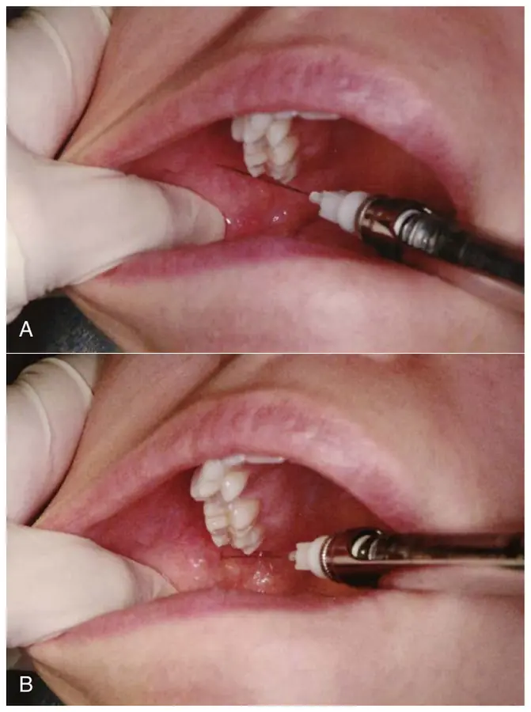
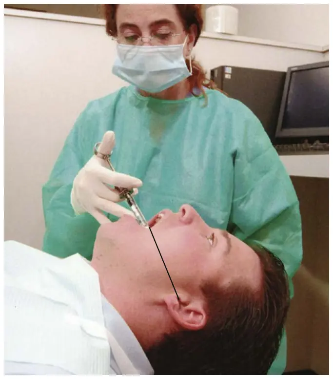

نسخه استخراجشده؛ ترجمه یا تأیید علمی انجام نشده است. وضعیت: captured
بیمار ۳۸ سالهای برای ترمیم مولر اول و دوم پایین سمت راست آمده است. جلسهی قبل دو بار بلاک عصب آلوئولار تحتانی (IANB) گرفته و هر دو بار مولرها حس داشتند. این بار میخواهی گاو-گیتس بزنی. سوزن را از کجا و به کدام سمت میبری؟

گاو-گیتس یک بلاک واقعی عصب مندیبولار (V3) است. دارو را خیلی بالاتر از IANB، کنار گردن کندیل میریزی: سمت خارجی گردن کندیل، کمی پایینتر از محل چسبیدن عضلهی پتریگوئید خارجی.
آسپیراسیون مثبت حدود ۲٪ است و بیشتر از شریان ماگزیلاری داخلی میآید که پایینتر از هدف است. اگر مثبت شد، کمی عقب بکش، سوزن را کمی رو به بالا ببر و دوباره آسپیره کن.

تا استخوان لمس نشده، دارو نریز. شایعترین علت این است که بیمار دهانش را کمی بسته؛ بافت ضخیمتر و کندیل عقبتر میرود. سوزن را کمی عقب بکش، بخواه دهانش را بازتر کند و دوباره پیش برو. اگر سوزن به داخل منحرف شده، بدنهی سرنگ را کمی دیستالتر ببر تا نوک سوزن جلوتر برود.